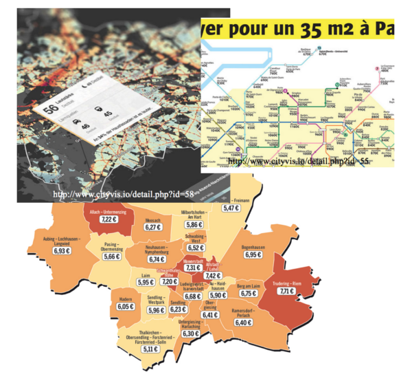
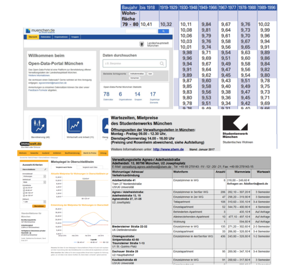
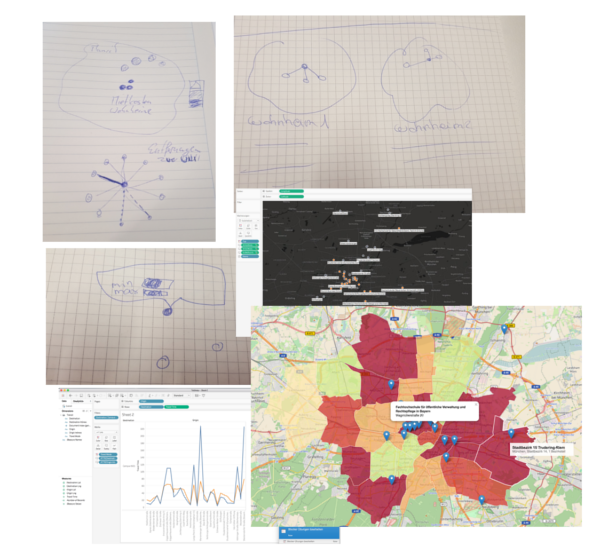
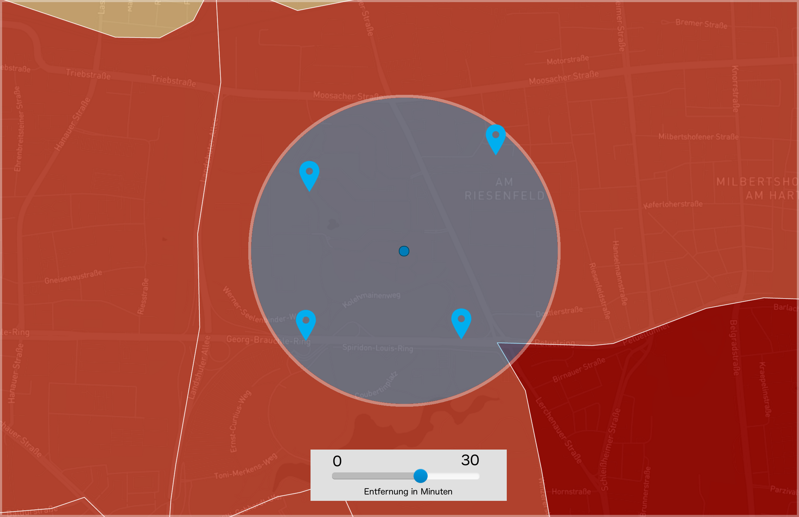
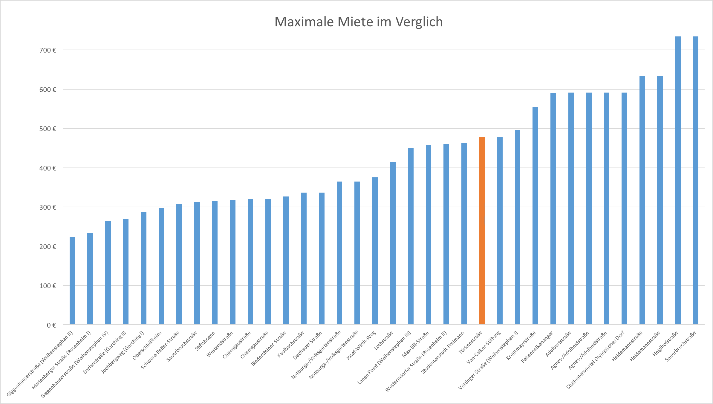

Münchener Mieten für Studenten
UNSERE FRAGEN UND IDEEN
- Was kostet es in einem Studentenwohnheim zu wohnen?
- Sind zentrumsnahe Wohnheime teurer als zentrumsferne?
- Wie teuer sind die Wohngegenden in denen die Wohnheime liegen?
- Wie lange dauert es bis ich überhaupt einen Wohnheimplatz bekomme?
- Wie lange brauche ich von meinem Wohnheim zur Universität?
UNSERE ERKENTNISSE
- Ein Wohnheimplatz lohnt sich finanziell immer, wenn man denn einen bekommt. Wartezeiten von über drei Semestern sind nicht unüblich.
- Die Wohnheime liegen zentral und in teuren Gegenden. Hier kann man vermuten, dass es die Wohnheime schon länger gibt als die teuren Mieten. Es zieht immer mehr Menschen in die Innenstädte, wodurch der umliegende Wohnraum aufgewertet wird.
- Es gibt auch Wohnheime, die weiter weg liegen. Diese sind deswegen allerdings nicht zwingend günstiger.
Die Entstehung
Inspiration
{kind=link}
Datensammlung
{kind=link}
Prototypen
{kind=link}
Unsere Aussichten
Hochschulen und Universitäten in der Nähe
{kind=link}
Nachdem das gewünschte Wohnheim ausgewählt wurde, besteht die Möglichkeit sich Hochschulen und Universitäten anzeigen zu lassen. Die Einschränkung geschieht hierbei über einen Slieder
Die Entfernungsangabe wird über Minuten geregelt. Dabei wird Rücksicht auf die Wegstrecke zu Fuß, mit dem Fahrrad und mit der Bahn genommen.
Was kostet mein gewünschtes Wohnheim im Vergleich
{kind=link}
Für die Studenten spielt Geld oft eine Maßgebliche Rolle in der Wahl des richtigen Wohnheimes.
Klickt der Studierende auf ein für sich favorisiertes Wohnheim, bekommt er eine Übersicht in welchem Preisbereich es sich im Vergleich zu den anderen Wohnheimen bewegt.
Beispiel für eine Weitere Aussicht - Dient aktuell nur als Template
Nachdem das gewünschte Wohnheim ausgewählt wurde, besteht die Möglichkeit sich Hochschulen und Universitäten anzeigen zu lassen. Die Einschränkung geschieht hierbei über einen Slieder
Die Entfernungsangabe wird über Minuten geregelt. Dabei wird Rücksicht auf die Wegstrecke zu Fuß, mit dem Fahrrad und mit der Bahn genommen.